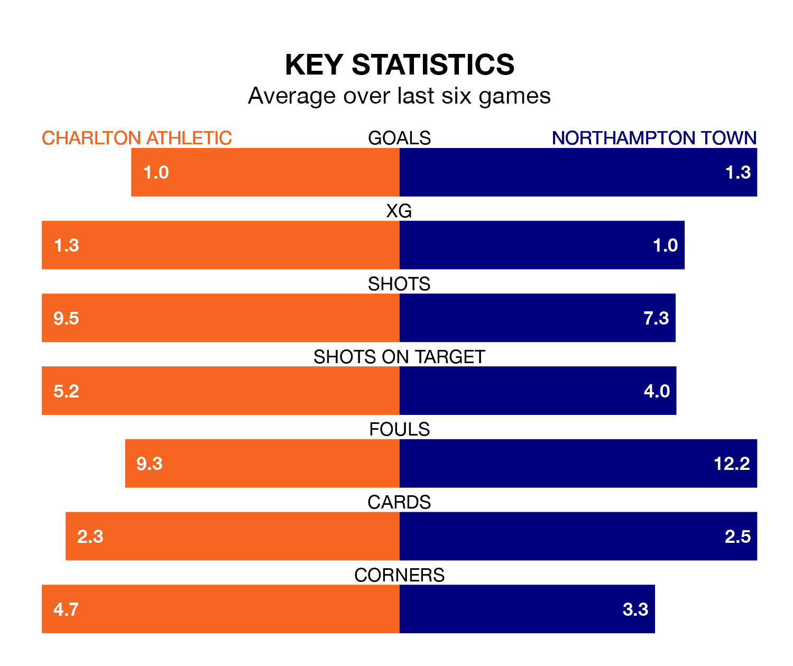

Charlton Athletic are on a terrible run ahead of hosting Northampton Town at the Valley on Tuesday, with just one point collected from their last six games.
The Addicks have picked up just one draw in their last six EFL League One games, and face a Cobblers side whose last six games have brought three wins and two draws.
In Alfie May, Charlton have the league's most on-form striker so far this season. He has notched 16 goals in 24 appearances.
His goal rate of one every 134 minutes is quicker than that of Sam Hoskins, Northampton's top scorer with a goal every 162 minutes, and a total of 13 goals in 24 games.
In the last 10 years, Charlton and Northampton have played each other on six occasions. Charlton won four of them, Northampton one, and they drew once.
On average, the Addicks scored 2.3 goals and the Cobblers 0.8 in those matches.
Their last meeting was on March 9 2021, when Charlton won 2-1 at home.
With 40 goals in 27 games so far this season, Athletic are scoring more than average in the league with 1.5 goals per game. But they are conceding more than average too, letting in 41 goals at a rate of 1.5 per game.
Town, meanwhile, are below average scorers, with 1.2 goals per game, compared to a league average of 1.3. They have conceded 1.3 goals per game.
The Addicks are 16th in the table after 27 games, of which they have won seven and drawn nine, earning 30 points.
The Cobblers are five places ahead of the home side in 11th, with 11 wins and four draws putting them on 37 points.
Charlton's last match was on Saturday, a 2-0 loss against Burton Albion.
Northampton drew 1-1 with Wigan Athletic last time out, on January 13, with Hoskins on the scoresheet.
Tuesday's match will be refereed by Paul Howard, who has taken charge of six EFL League One games so far this season, issuing one red card and booking 28 players. He has not awarded any penalties.
The last Charlton game Howard refereed was a 3-2 away win against Wigan Athletic on October 31. He is yet to oversee a match featuring Northampton this season.
Updated: 09:18 (UTC), 23/01/24